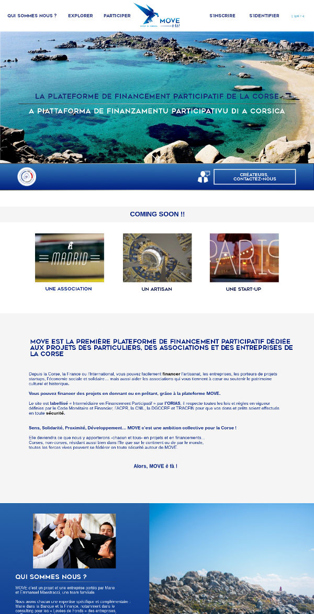

Projets Web
Explication
MOVE est une plateforme de financement participative dédiée au développement économique, social et culturel du territoire Corse, accessibles aux particuliers, associations et entreprises.
Ici l'ambiance graphique demandée jouait entre le dynamisme, la simplicité, ainsi que la mise en avant du paysage Corse. L'intégration du site a été éffectué sur Mipise, site de création de plateformes de financement partifipatifs.